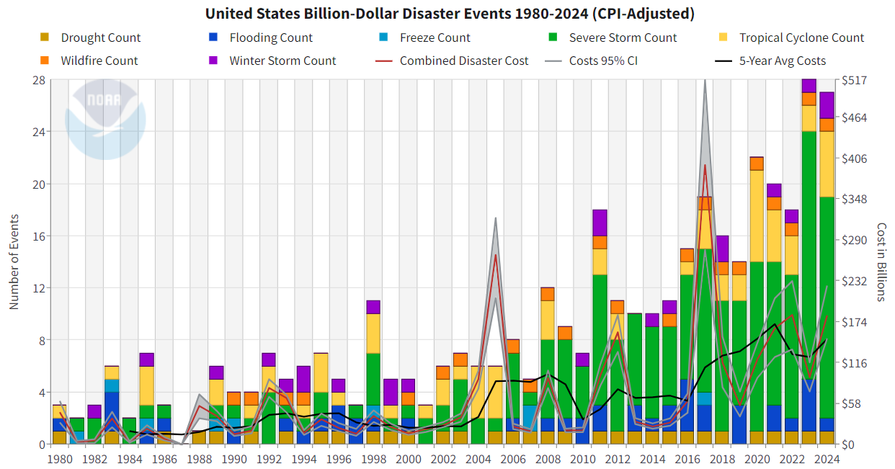

Portfolio Project 3
Billion Dollar Disasters
Overview
For your third portfolio project, you’ll apply what you’ve learned about iteration and programming. We’ll work with data from the NOAA on Billion Dollar Disasters in the U.S.
Your task is to create an improved version of the graph below:

You should create two plots:
- A bar graph of disaster type in each year
- A time series line plot of the combined (adjusted) cost for each year
To do so, you will need to programmatically read in a different CSV file for each year of the data, and combine them into a single dataset. This should include:
- Writing a function called
read_disaster_datathat takes a file path and correctly reads in the corresponding data. You should pay attention to variable types (factors should be treated as factors, dates should be treated as dates, etc.) - Using iteration (either map or a for-loop) to apply your function to each data set in the “data” folder
- Using
write_csvto save your final dataset in your repo. (You likely do not want to save it in thedata/folder)
If you get stuck, R for Data Science has a helpful section on Reading Multiple Files that you may refer to.
You should write your code in R Markdown, create any graphics using ggplot2, and use tools from this class for data reading, wrangling, and iteration. To submit your work, push your repo to GitHub and submit to gradescope.
Data
The data for this portfolio problem is from the National Centers for Environmental Information at the National Oceanic and Atmospheric Administration.
Your repos will contain the following files:
- data/1980.csv
- data/1981.csv
- …
- data/2024.csv
Where each dataset has the following variables:
| variable | class |
|---|---|
| Name | character |
| Disaster | factor |
| Begin Date | date |
| End Date | date |
| CPI-Adjusted Cost | numeric |
| Unadjusted Cost | numeric |
| Deaths | numeric |
There are also two header rows that contain information about the dataset, but do not need to be read in to R.
Submission
Your submission will be an .Rmd file that creates your two graphs. You should include a paragraph at the beginning that outlines what your code does.
Rubric
A successful project will:
- Your file contains a function called
read_disaster_datathat: - [ ] Imports a user-specified file - [ ] Parses all variable types correctly (e.g. dates are treated as dates, factors are treated as factors) - [ ] Edits the “Name” column to remove the date information - Meet minimum submission quality standards
An excellent project will meet all of the requirements for a successful project, plus
- Meet high submission quality standards
Can I work with someone?
Yes! You can work individually or in pairs for this project. If you’d like to work in a pair, you must notify me by noon on Friday of Week 7 so I can create your group repo.
From the syllabus: You are expected to collaborate with your group, but cannot rely on external sources other than to help motivate the questions or provide other background information (including online forums like StackExchange or Reddit). You may use any resources from class and package documentation, but getting answers on significant parts of solutions from outside resources is not allowed.
There are lots of ways to do this task! I am looking for evidence that you can correctly implement the tools that we’ve discussed in class. If I notice code that looks very different than what we’ve used in course materials, I won’t be able to assess whether you’ve learned the tools from the class. I will refer extreme cases to the ASC.
FAQ
If you have any questions, please post them to the #portfolio-projects channel on slack.